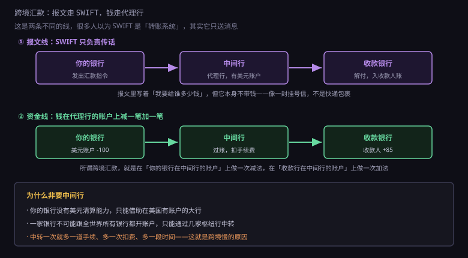
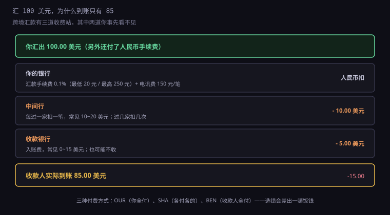
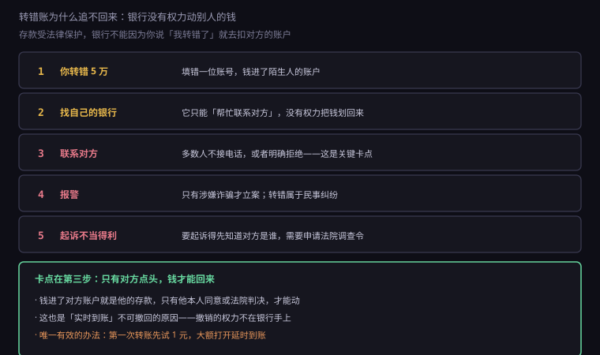

约 0.35 万字 · 3 张图 · 国内转账三秒，跨境要三天；转错一笔，可能要三年
先纠正一个流传很广的误解：SWIFT 不是转账系统。
很多人以为跨境汇款是"通过 SWIFT 把钱发过去"，就像发微信一样。 实际上 SWIFT 只做一件事：把消息送到。 它是一套银行之间约定好的报文格式和传输网络， 成立于 1973 年，总部在比利时。

报文里写着什么？汇款人、收款人、金额、币种、用途、附言， 以及最关键的——这笔钱应该记到哪个账户上。 它相当于一封挂号信，格式严格到每一个字段的位置都规定死了。
但信里没有钱。钱怎么过去？ 靠代理行关系（correspondent banking）。
你的银行在美国的某家大银行开了一个账户，里面存着美元。 这叫"往账账户"（nostro account）。 当你要汇 100 美元给美国的朋友，你的银行做的事是： 在自己的这个美元账户上减 100，然后发报文告诉对方"这 100 归谁"。
整个过程里，没有任何一张钞票跨过国境， 也没有任何一笔钱"飞"过去。它只是在几个账户的数字上加减， 跟国内跨行转账的本质一模一样。
所以跨境汇款慢，不是因为钱要运输， 而是因为中间经过的每一层都要核对、合规审查、再转发。
一个自然的问题是：你的银行和收款银行直接对接不行吗？
理论上可以，实际上不行。因为"开账户"这件事成本极高： 要在对方国家有实体、受当地监管、缴资本金、满足反洗钱要求。 全世界有两万多家银行，让每家都跟每家开账户，需要两亿个账户关系， 这是天文数字。
所以现实中的结构是枢纽式：大部分银行只跟少数几家国际大行开账户， 剩下的事由这几家枢纽行中转。 美元清算的枢纽在纽约，欧元在法兰克福，日元在东京。
代价是：汇款路径可能经过两三家中间行， 每过一家扣一笔手续费、多一天时间、多一次合规检查。 你汇出的 100 美元，到账可能是 85，中间蒸发的部分就是这么来的。
更麻烦的是路径不可见。 你在手机银行上看到的只是"已汇出"，中间走了哪几家行、现在卡在谁手上， 你查不到。要查，得让银行去发查询报文，一来一回又是几天。
这几年有一些新机制在改善这件事，比如 SWIFT 的 gpi 服务， 能给每笔汇款加一个追踪号，让路径可视化。 但它改变的是"看得见"，不是"走得快"—— 慢的根源在于每家银行都要自己做合规审查，这一步没法省。
现在算一笔具体的账。汇 100 美元到美国，你可能付出这些：

第一道，你的银行。 汇款手续费按金额比例收，通常 0.1%，有最低和最高限额； 另外还有一笔固定的电讯费，常见 150 元一笔。 这笔钱在人民币账户里扣，你当场能看到。
第二道，中间行。 每过一家扣一笔，常见 10 到 20 美元。 这笔钱你没被通知，直接从汇款金额里扣， 所以对方收到的会比你汇的少。
第三道，收款银行。 入账费，0 到 15 美元不等，有些银行不收。
三道加起来，汇 100 美元到账 85 美元，是很正常的事。 小额汇款尤其吃亏——固定费用占比太高， 所以业内有个说法：低于 5000 美元的跨境汇款，成本率高得离谱。
这里有个实用知识：汇款时有三种付费方式可选。
| 代码 | 意思 | 谁承担中间行费用 |
|---|---|---|
OUR | 汇款人全付 | 你，另外加收一笔，但对方能收到全额 |
SHA | 共同承担 | 各付各的，中间行从汇款里扣 |
BEN | 收款人全付 | 全部从汇款金额里扣，对方收到的最少 |
默认往往是 SHA。如果你要确保对方收到足额（比如付学费、付货款）， 就得选 OUR，并且在汇款时多付一笔。 这个选项在手机银行的"附言/费用承担方式"里，很多人从来没注意过。
费用之外，还有一笔更隐蔽的成本：汇率。
你在银行看到的"美元卖出价"，不是国际市场那个中间价。 中间价是银行之间买卖的批发价，你拿到的是加了点差的零售价。 这个点差常见是千分之几，看起来不多， 但换 5 万美元就是几百块。
更坑的是境外刷卡时的 DCC（动态货币转换）。 你在国外的店里刷卡，收银员问你"用美元还是人民币结算？" 如果你选人民币，商户会把当地货币按它自己的汇率折成人民币， 这个汇率通常比银行牌价差 3% 左右，差额被商户和它的收单行分掉。
正确做法在 7.4.5 已经说过：永远选当地货币。 让卡组织去做转换，汇率接近批发价，只收 1% 左右的货币转换费。
顺带说一句：你在境外网站买东西，如果看到标价是人民币， 但结算时又出现一个"汇率"，那多半也是 DCC。 它不违法，只是贵。
这一节最实用的部分是这一段。
很多人以为转错账了，打个电话给银行，银行就能把钱划回来。 不能。 这不是银行不作为，是它真的没有这个权力。

第一步，钱已经进了对方账户。 只要账号和户名对得上，转账就成功了。这时候钱是对方的存款。
第二步，你的银行只能"帮忙联系"。 它可以给收款行发个通知，请对方协助， 但收款行也没有权力单方面扣客户的钱—— 存款受法律保护，除了本人授权、司法冻结、或者法定扣划，任何机构都不能动。
第三步，联系对方。 这是最关键的一步，也是最容易卡住的一步。 对方如果配合，签个字，钱就能退回来。 但现实中很多人不接电话、不认账，甚至直接把钱转走。
第四步，报警。 警察会问：是你自己操作的吗？是的话，这属于民事纠纷，不立案。 只有涉嫌诈骗（对方用欺骗手段让你转），才走刑事程序。 所以"我自己输错了账号"这种，报警基本没用。
第五步，起诉。 法律上这叫"不当得利"——对方没有合法依据取得利益，应当返还。 这条路是可行的，但要先知道对方是谁， 而银行不会把客户信息给你，你得立案后申请法院调查令。 一套流程走完，几个月到一年，诉讼费律师费自理。
所以结论很硬：转错账能追回，但成本远高于大多数人愿意付出的。 金额几千块，通常就不了了之了。
这也是为什么反诈宣传里反复强调"先转 1 元试试"。 1 元的试转，能验证账号、户名、行名全部正确， 成本几乎为零，却能避免后面所有的麻烦。
虽然追回很难，但有一件事比十年前好太多了：账户实名制。
以前开户不严格，一个人可以拿假身份证开一堆卡， 钱一转进去就取现，根本查不到是谁。 现在每张卡都对应一个真实身份，取现、转账都留痕， 大额现金交易还要登记用途。
这套体系本来是反洗钱用的，但客观上让"追回"从不可能变成了可能。 至少你知道钱进了谁的账户，法院能查到人， 对方要是拒不返还，还能上失信名单。
配合的另一套机制是延时到账。 上一节讲过，它是给你留的撤回窗口。 对转错账来说，这个窗口的价值更大： 只要你选的是 24 小时延时，发现转错后立刻联系银行， 钱还没入账，就能拦下来。
所以真正有效的防线是三层： 转前核对（试转 1 元）、转时选择（延时到账）、转后立刻行动（打客服报流水号）。 三层都做到，转错账的概率和损失都能压到很低。
每隔几年就有人宣布"区块链要颠覆跨境支付"， 说它能让汇款秒到、费用接近零。到 2026 年，这件事仍然没有大规模发生。
原因不在技术，在三件技术解决不了的事。
第一，合规审查砍不掉。 每笔跨境汇款都要过反洗钱和制裁名单筛查， 这不是银行自己想查，是法律要求。 区块链能让钱走得快，但不能让审查变快—— 审查慢的原因是"要人工判断这个收款人是不是可疑"，跟用什么账本无关。
第二，法币的入口出口还是要靠银行。 你用稳定币汇款，最后还是要把稳定币换成对方的本地货币。 这个兑换环节仍然在现有的银行体系里， 该有的手续费、该有的时间，一样不少。 链上快，链下慢，整体还是慢。
第三，责任归属不清楚。 传统汇款里，钱丢了知道找谁——找汇出行，它负责追。 链上转账一旦出错，没有"客服"，没有"冲正"， 私钥丢了就是丢了。对金融机构来说，这种不可逆性是风险，不是优点。
所以现在的实际情况是：区块链在跨境支付里找到了几个特定场景 （小额高频、监管宽松的走廊、B2B 结算）， 但主流的个人汇款，还是走 SWIFT 加代理行。 这套系统老、慢、贵，但它有一个无可替代的优点： 每一环都有明确的责任主体，出了事有人负责。
到这里，7.5 这一章讲完了。回头看这六节，其实只讲了一件事： 钱在系统里怎么移动。
刷卡那一秒，是授权； 夜里那一批，是清算； 手续费的三个抽屉，是分配； 转账的五步，是消息投递； 扫码的三个池子，是账户层级； 跨境的代理行，是信任的接力。
这些流程看起来繁琐、冗余、慢， 但它们每一个环节都在解决同一个问题： 在两台互不信任的机器之间，安全地转移一笔价值。
你觉得慢的那几秒，是别人用几十年时间换来的确定性。 支付系统的最高评价从来不是"快"，而是"不出错"。 因为在这个领域，一次错误可能意味着一个人的全部积蓄消失， 而且没有撤销键。